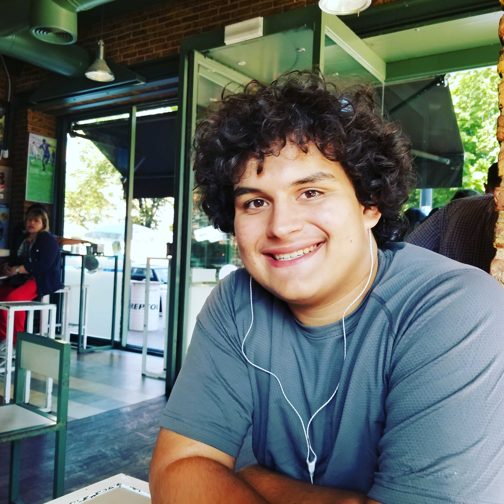

Julian M Mato-Hernadez
I am a student at the rochester institute of technology majoring in Computing and Information Technologies or CIT for short.
Mision Statement
This Web page is to inform you about me, my skills, and my intrests in as palatable a maner I can
My intrests inclide:
- Networking
- Mass Data Storage
- Data Security
- System Intigration
- Intel
- AMD
- Server Arcatecture
- Retro Computers
- Electrical Engeniring
- 3D Printing
- SLA
- FDM
- Web Desighn
- Vertualization
- Containers
- Algorithms